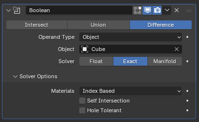

Lesson 11: Boolean cut
What Boolean does
A Boolean combines two objects. Use Difference to subtract one object from another. The second object is called the cutter. This is how you make holes, slots, and cutouts.

Image: Blender Manual by the Blender Documentation Team, licensed under CC BY-SA 4.0. Shared unchanged.
Steps
- Tool Add a cube (Shift + A, Mesh > Cube). Press S, X, type 2, Enter. This is the cable box. menu path unverified in 5.2.1
- Key Add a cylinder (Shift + A, then Mesh > Cylinder). menu name unverified
- Key Press G, Z, and move the cylinder up so it sits above the box.
- Key Press S, type 0.4, and press Enter to make the cylinder narrow. Then move it so it passes through the top of the box.
- Mouse Click the cable box (not the cylinder) to select it.
- In Properties, click the blue wrench tab. Click Add Modifier, then Generate > Boolean.
- Under Object, click the empty box and choose the cylinder. Make sure Difference is highlighted.
- Check A round hole is cut through the top of the box.
- Key Press Cmd + S to save as
cable-box.blend.
Why the cylinder still shows: a Boolean keeps the cutter visible until you hide it. Hiding it is a separate step. Hide shortcut and location unverified on your Mac
Project: cable box
A small box with a hole for cables to pass through, useful on a desk. Save as cable-box.blend.